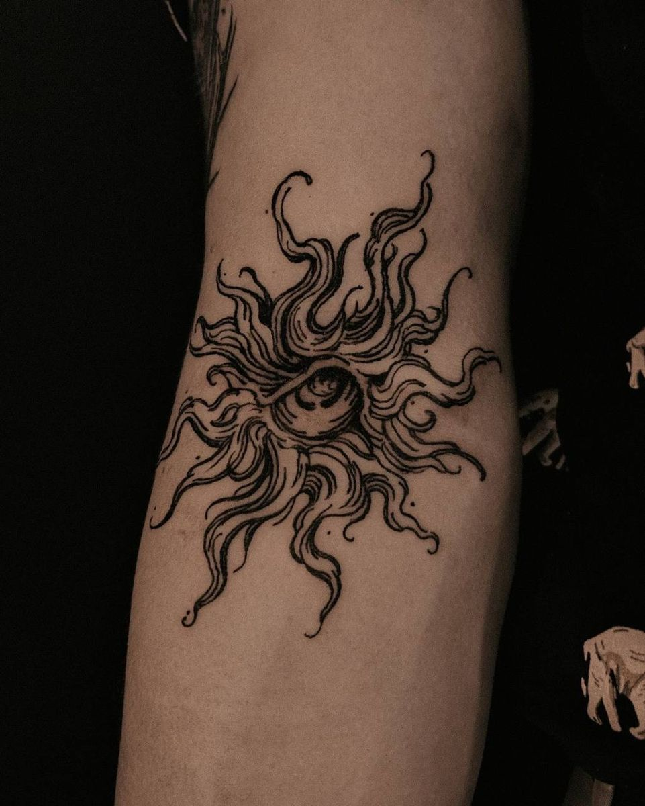
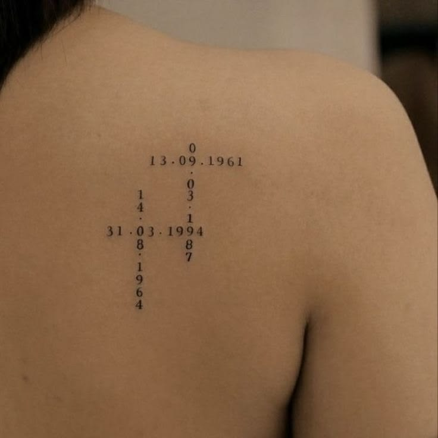
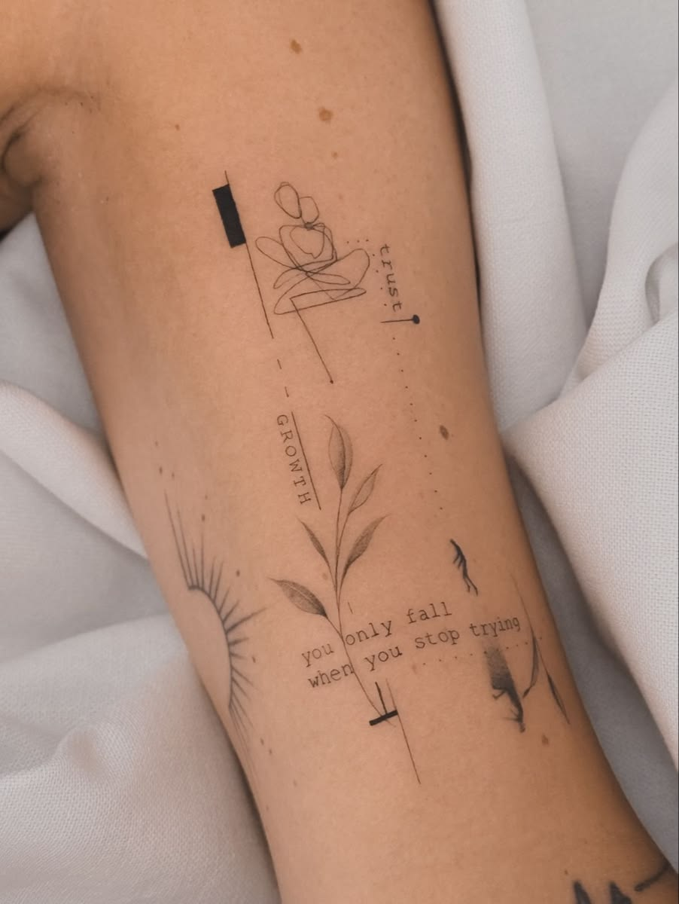
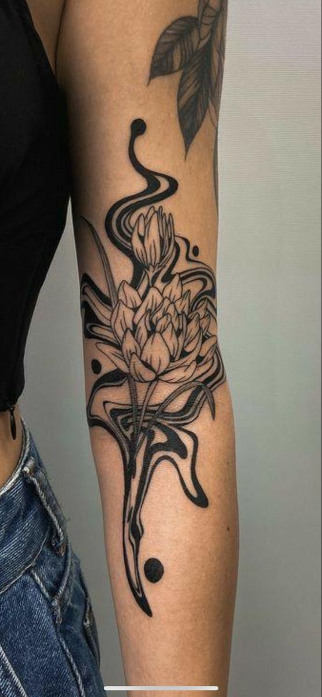
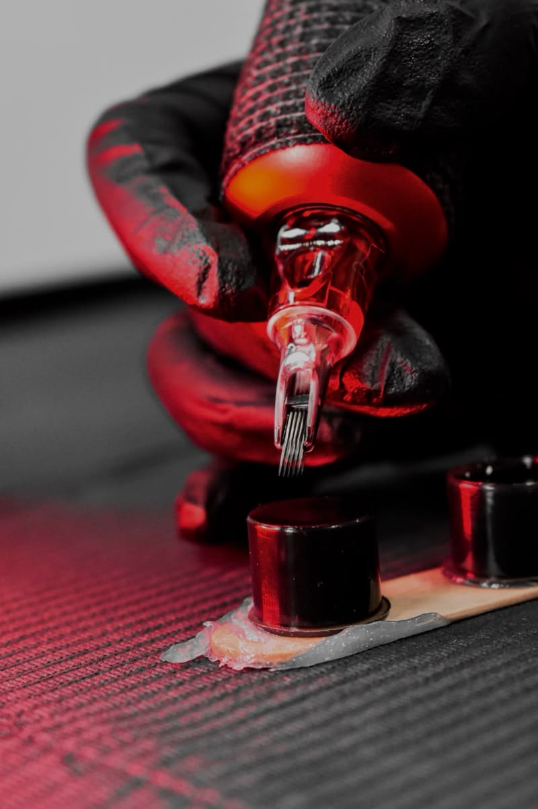
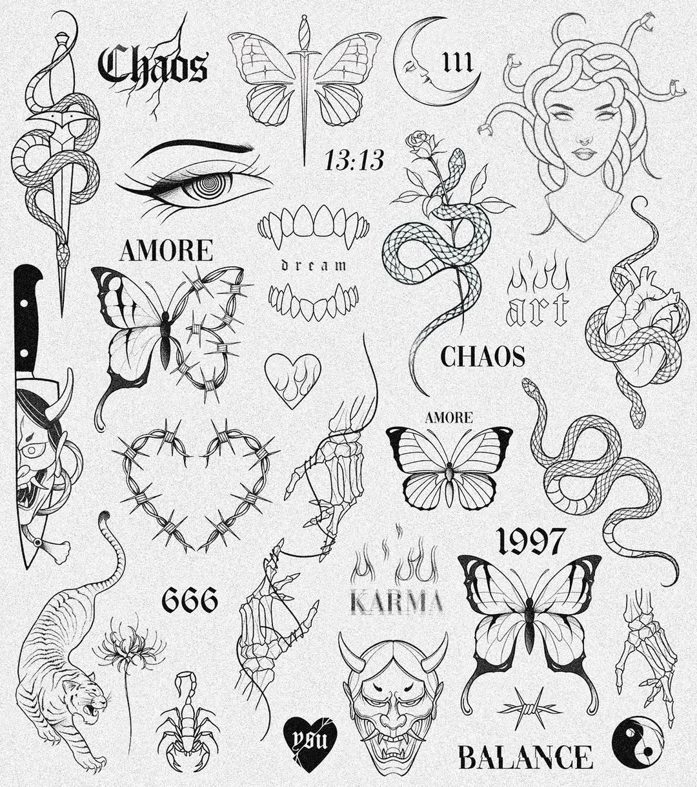
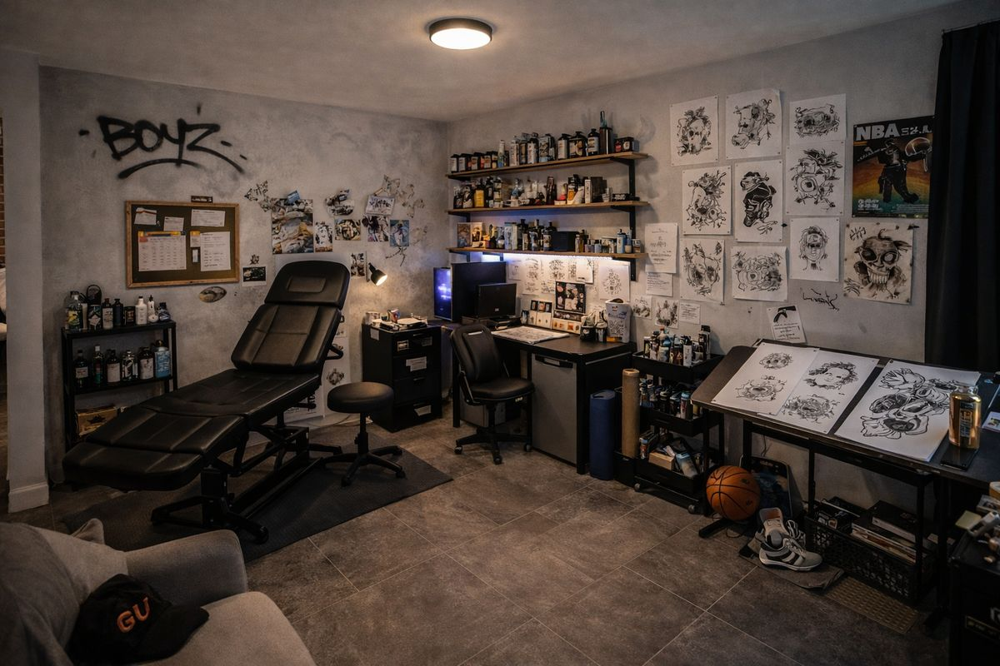

01
Blackwork
Uso exclusivo de tinta negra sólida, contrastes profundos, geometría sagrada y texturas de grabado antiguo.
Más que un dibujo bajo la piel, un arte que cuenta una historia.
Explorar Estilos1. Grabado permanente en la piel humana mediante la inserción de pigmentos a través de punciones.
2. Lenguaje visual sin palabras; marca de pertenencia, memoria, rebeldía y expresión artística que transforma el cuerpo en un lienzo vivo.

Uso exclusivo de tinta negra sólida, contrastes profundos, geometría sagrada y texturas de grabado antiguo.

Iconografía cargada de significado personal, amuletos, talismanes y metáforas visuales grabadas como memoria en la piel.

Precisión quirúrgica con agujas de una sola punta. Trazos sutiles, minimalismo, botánica y detalles delicados.

La evolución ilustrativa del tradicional: variación en el grosor de línea, sombreados complejos y estética Art Nouveau.
Hacé clic en cualquier fotografía para ampliarla



Lavar suavemente con jabón neutro y agua tibia tres veces al día durante las primeras semanas.
Aplicar capas muy finas de crema cicatrizante sin perfume para mantener la piel elástica.
Evitar la exposición directa al sol, piletas y no arrancar las costras durante el proceso.